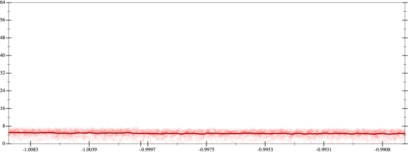
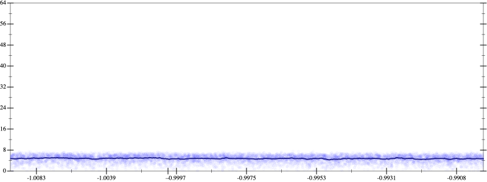
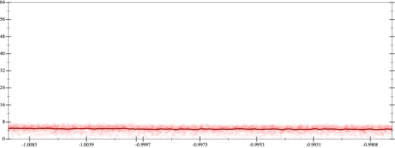
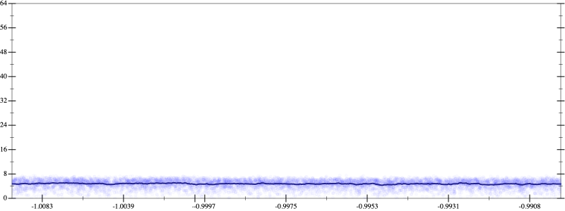

Initial program 4.7
\[\left(\left(\left(\left(\left(\left(\left(17643225600.0 \cdot x + -94097203200.0 \cdot \left(\left(x \cdot x\right) \cdot x\right)\right) + 131736084480.0 \cdot \left(\left(\left(\left(x \cdot x\right) \cdot x\right) \cdot x\right) \cdot x\right)\right) + -75277762560.0 \cdot \left(\left(\left(\left(\left(\left(x \cdot x\right) \cdot x\right) \cdot x\right) \cdot x\right) \cdot x\right) \cdot x\right)\right) + 20910489600.0 \cdot \left(\left(\left(\left(\left(\left(\left(\left(x \cdot x\right) \cdot x\right) \cdot x\right) \cdot x\right) \cdot x\right) \cdot x\right) \cdot x\right) \cdot x\right)\right) + -3041525760.0 \cdot \left(\left(\left(\left(\left(\left(\left(\left(\left(\left(x \cdot x\right) \cdot x\right) \cdot x\right) \cdot x\right) \cdot x\right) \cdot x\right) \cdot x\right) \cdot x\right) \cdot x\right) \cdot x\right)\right) + 233963520.0 \cdot \left(\left(\left(\left(\left(\left(\left(\left(\left(\left(\left(\left(x \cdot x\right) \cdot x\right) \cdot x\right) \cdot x\right) \cdot x\right) \cdot x\right) \cdot x\right) \cdot x\right) \cdot x\right) \cdot x\right) \cdot x\right) \cdot x\right)\right) + -8912896.0 \cdot \left(\left(\left(\left(\left(\left(\left(\left(\left(\left(\left(\left(\left(\left(x \cdot x\right) \cdot x\right) \cdot x\right) \cdot x\right) \cdot x\right) \cdot x\right) \cdot x\right) \cdot x\right) \cdot x\right) \cdot x\right) \cdot x\right) \cdot x\right) \cdot x\right) \cdot x\right)\right) + 131072.0 \cdot \left(\left(\left(\left(\left(\left(\left(\left(\left(\left(\left(\left(\left(\left(\left(\left(x \cdot x\right) \cdot x\right) \cdot x\right) \cdot x\right) \cdot x\right) \cdot x\right) \cdot x\right) \cdot x\right) \cdot x\right) \cdot x\right) \cdot x\right) \cdot x\right) \cdot x\right) \cdot x\right) \cdot x\right) \cdot x\right)\]
- Using strategy
rm Applied associate-+l+4.7
\[\leadsto \left(\left(\left(\left(\color{blue}{\left(\left(17643225600.0 \cdot x + -94097203200.0 \cdot \left(\left(x \cdot x\right) \cdot x\right)\right) + \left(131736084480.0 \cdot \left(\left(\left(\left(x \cdot x\right) \cdot x\right) \cdot x\right) \cdot x\right) + -75277762560.0 \cdot \left(\left(\left(\left(\left(\left(x \cdot x\right) \cdot x\right) \cdot x\right) \cdot x\right) \cdot x\right) \cdot x\right)\right)\right)} + 20910489600.0 \cdot \left(\left(\left(\left(\left(\left(\left(\left(x \cdot x\right) \cdot x\right) \cdot x\right) \cdot x\right) \cdot x\right) \cdot x\right) \cdot x\right) \cdot x\right)\right) + -3041525760.0 \cdot \left(\left(\left(\left(\left(\left(\left(\left(\left(\left(x \cdot x\right) \cdot x\right) \cdot x\right) \cdot x\right) \cdot x\right) \cdot x\right) \cdot x\right) \cdot x\right) \cdot x\right) \cdot x\right)\right) + 233963520.0 \cdot \left(\left(\left(\left(\left(\left(\left(\left(\left(\left(\left(\left(x \cdot x\right) \cdot x\right) \cdot x\right) \cdot x\right) \cdot x\right) \cdot x\right) \cdot x\right) \cdot x\right) \cdot x\right) \cdot x\right) \cdot x\right) \cdot x\right)\right) + -8912896.0 \cdot \left(\left(\left(\left(\left(\left(\left(\left(\left(\left(\left(\left(\left(\left(x \cdot x\right) \cdot x\right) \cdot x\right) \cdot x\right) \cdot x\right) \cdot x\right) \cdot x\right) \cdot x\right) \cdot x\right) \cdot x\right) \cdot x\right) \cdot x\right) \cdot x\right) \cdot x\right)\right) + 131072.0 \cdot \left(\left(\left(\left(\left(\left(\left(\left(\left(\left(\left(\left(\left(\left(\left(\left(x \cdot x\right) \cdot x\right) \cdot x\right) \cdot x\right) \cdot x\right) \cdot x\right) \cdot x\right) \cdot x\right) \cdot x\right) \cdot x\right) \cdot x\right) \cdot x\right) \cdot x\right) \cdot x\right) \cdot x\right) \cdot x\right)\]
Applied simplify4.8
\[\leadsto \left(\left(\left(\left(\left(\left(17643225600.0 \cdot x + -94097203200.0 \cdot \left(\left(x \cdot x\right) \cdot x\right)\right) + \color{blue}{\left(\left(x \cdot x\right) \cdot \left(x \cdot x\right)\right) \cdot \left(\left(-75277762560.0 \cdot x\right) \cdot \left(x \cdot x\right) + 131736084480.0 \cdot x\right)}\right) + 20910489600.0 \cdot \left(\left(\left(\left(\left(\left(\left(\left(x \cdot x\right) \cdot x\right) \cdot x\right) \cdot x\right) \cdot x\right) \cdot x\right) \cdot x\right) \cdot x\right)\right) + -3041525760.0 \cdot \left(\left(\left(\left(\left(\left(\left(\left(\left(\left(x \cdot x\right) \cdot x\right) \cdot x\right) \cdot x\right) \cdot x\right) \cdot x\right) \cdot x\right) \cdot x\right) \cdot x\right) \cdot x\right)\right) + 233963520.0 \cdot \left(\left(\left(\left(\left(\left(\left(\left(\left(\left(\left(\left(x \cdot x\right) \cdot x\right) \cdot x\right) \cdot x\right) \cdot x\right) \cdot x\right) \cdot x\right) \cdot x\right) \cdot x\right) \cdot x\right) \cdot x\right) \cdot x\right)\right) + -8912896.0 \cdot \left(\left(\left(\left(\left(\left(\left(\left(\left(\left(\left(\left(\left(\left(x \cdot x\right) \cdot x\right) \cdot x\right) \cdot x\right) \cdot x\right) \cdot x\right) \cdot x\right) \cdot x\right) \cdot x\right) \cdot x\right) \cdot x\right) \cdot x\right) \cdot x\right) \cdot x\right)\right) + 131072.0 \cdot \left(\left(\left(\left(\left(\left(\left(\left(\left(\left(\left(\left(\left(\left(\left(\left(x \cdot x\right) \cdot x\right) \cdot x\right) \cdot x\right) \cdot x\right) \cdot x\right) \cdot x\right) \cdot x\right) \cdot x\right) \cdot x\right) \cdot x\right) \cdot x\right) \cdot x\right) \cdot x\right) \cdot x\right) \cdot x\right)\]
- Using strategy
rm Applied add-sqr-sqrt4.9
\[\leadsto \left(\left(\left(\left(\color{blue}{\sqrt{\left(17643225600.0 \cdot x + -94097203200.0 \cdot \left(\left(x \cdot x\right) \cdot x\right)\right) + \left(\left(x \cdot x\right) \cdot \left(x \cdot x\right)\right) \cdot \left(\left(-75277762560.0 \cdot x\right) \cdot \left(x \cdot x\right) + 131736084480.0 \cdot x\right)} \cdot \sqrt{\left(17643225600.0 \cdot x + -94097203200.0 \cdot \left(\left(x \cdot x\right) \cdot x\right)\right) + \left(\left(x \cdot x\right) \cdot \left(x \cdot x\right)\right) \cdot \left(\left(-75277762560.0 \cdot x\right) \cdot \left(x \cdot x\right) + 131736084480.0 \cdot x\right)}} + 20910489600.0 \cdot \left(\left(\left(\left(\left(\left(\left(\left(x \cdot x\right) \cdot x\right) \cdot x\right) \cdot x\right) \cdot x\right) \cdot x\right) \cdot x\right) \cdot x\right)\right) + -3041525760.0 \cdot \left(\left(\left(\left(\left(\left(\left(\left(\left(\left(x \cdot x\right) \cdot x\right) \cdot x\right) \cdot x\right) \cdot x\right) \cdot x\right) \cdot x\right) \cdot x\right) \cdot x\right) \cdot x\right)\right) + 233963520.0 \cdot \left(\left(\left(\left(\left(\left(\left(\left(\left(\left(\left(\left(x \cdot x\right) \cdot x\right) \cdot x\right) \cdot x\right) \cdot x\right) \cdot x\right) \cdot x\right) \cdot x\right) \cdot x\right) \cdot x\right) \cdot x\right) \cdot x\right)\right) + -8912896.0 \cdot \left(\left(\left(\left(\left(\left(\left(\left(\left(\left(\left(\left(\left(\left(x \cdot x\right) \cdot x\right) \cdot x\right) \cdot x\right) \cdot x\right) \cdot x\right) \cdot x\right) \cdot x\right) \cdot x\right) \cdot x\right) \cdot x\right) \cdot x\right) \cdot x\right) \cdot x\right)\right) + 131072.0 \cdot \left(\left(\left(\left(\left(\left(\left(\left(\left(\left(\left(\left(\left(\left(\left(\left(x \cdot x\right) \cdot x\right) \cdot x\right) \cdot x\right) \cdot x\right) \cdot x\right) \cdot x\right) \cdot x\right) \cdot x\right) \cdot x\right) \cdot x\right) \cdot x\right) \cdot x\right) \cdot x\right) \cdot x\right) \cdot x\right)\]
- Using strategy
rm Applied flip3-+4.9
\[\leadsto \left(\left(\left(\left(\sqrt{\left(17643225600.0 \cdot x + -94097203200.0 \cdot \left(\left(x \cdot x\right) \cdot x\right)\right) + \left(\left(x \cdot x\right) \cdot \left(x \cdot x\right)\right) \cdot \left(\left(-75277762560.0 \cdot x\right) \cdot \left(x \cdot x\right) + 131736084480.0 \cdot x\right)} \cdot \sqrt{\left(17643225600.0 \cdot x + -94097203200.0 \cdot \left(\left(x \cdot x\right) \cdot x\right)\right) + \left(\left(x \cdot x\right) \cdot \left(x \cdot x\right)\right) \cdot \color{blue}{\frac{{\left(\left(-75277762560.0 \cdot x\right) \cdot \left(x \cdot x\right)\right)}^{3} + {\left(131736084480.0 \cdot x\right)}^{3}}{\left(\left(-75277762560.0 \cdot x\right) \cdot \left(x \cdot x\right)\right) \cdot \left(\left(-75277762560.0 \cdot x\right) \cdot \left(x \cdot x\right)\right) + \left(\left(131736084480.0 \cdot x\right) \cdot \left(131736084480.0 \cdot x\right) - \left(\left(-75277762560.0 \cdot x\right) \cdot \left(x \cdot x\right)\right) \cdot \left(131736084480.0 \cdot x\right)\right)}}} + 20910489600.0 \cdot \left(\left(\left(\left(\left(\left(\left(\left(x \cdot x\right) \cdot x\right) \cdot x\right) \cdot x\right) \cdot x\right) \cdot x\right) \cdot x\right) \cdot x\right)\right) + -3041525760.0 \cdot \left(\left(\left(\left(\left(\left(\left(\left(\left(\left(x \cdot x\right) \cdot x\right) \cdot x\right) \cdot x\right) \cdot x\right) \cdot x\right) \cdot x\right) \cdot x\right) \cdot x\right) \cdot x\right)\right) + 233963520.0 \cdot \left(\left(\left(\left(\left(\left(\left(\left(\left(\left(\left(\left(x \cdot x\right) \cdot x\right) \cdot x\right) \cdot x\right) \cdot x\right) \cdot x\right) \cdot x\right) \cdot x\right) \cdot x\right) \cdot x\right) \cdot x\right) \cdot x\right)\right) + -8912896.0 \cdot \left(\left(\left(\left(\left(\left(\left(\left(\left(\left(\left(\left(\left(\left(x \cdot x\right) \cdot x\right) \cdot x\right) \cdot x\right) \cdot x\right) \cdot x\right) \cdot x\right) \cdot x\right) \cdot x\right) \cdot x\right) \cdot x\right) \cdot x\right) \cdot x\right) \cdot x\right)\right) + 131072.0 \cdot \left(\left(\left(\left(\left(\left(\left(\left(\left(\left(\left(\left(\left(\left(\left(\left(x \cdot x\right) \cdot x\right) \cdot x\right) \cdot x\right) \cdot x\right) \cdot x\right) \cdot x\right) \cdot x\right) \cdot x\right) \cdot x\right) \cdot x\right) \cdot x\right) \cdot x\right) \cdot x\right) \cdot x\right) \cdot x\right)\]
Applied associate-*r/4.9
\[\leadsto \left(\left(\left(\left(\sqrt{\left(17643225600.0 \cdot x + -94097203200.0 \cdot \left(\left(x \cdot x\right) \cdot x\right)\right) + \left(\left(x \cdot x\right) \cdot \left(x \cdot x\right)\right) \cdot \left(\left(-75277762560.0 \cdot x\right) \cdot \left(x \cdot x\right) + 131736084480.0 \cdot x\right)} \cdot \sqrt{\left(17643225600.0 \cdot x + -94097203200.0 \cdot \left(\left(x \cdot x\right) \cdot x\right)\right) + \color{blue}{\frac{\left(\left(x \cdot x\right) \cdot \left(x \cdot x\right)\right) \cdot \left({\left(\left(-75277762560.0 \cdot x\right) \cdot \left(x \cdot x\right)\right)}^{3} + {\left(131736084480.0 \cdot x\right)}^{3}\right)}{\left(\left(-75277762560.0 \cdot x\right) \cdot \left(x \cdot x\right)\right) \cdot \left(\left(-75277762560.0 \cdot x\right) \cdot \left(x \cdot x\right)\right) + \left(\left(131736084480.0 \cdot x\right) \cdot \left(131736084480.0 \cdot x\right) - \left(\left(-75277762560.0 \cdot x\right) \cdot \left(x \cdot x\right)\right) \cdot \left(131736084480.0 \cdot x\right)\right)}}} + 20910489600.0 \cdot \left(\left(\left(\left(\left(\left(\left(\left(x \cdot x\right) \cdot x\right) \cdot x\right) \cdot x\right) \cdot x\right) \cdot x\right) \cdot x\right) \cdot x\right)\right) + -3041525760.0 \cdot \left(\left(\left(\left(\left(\left(\left(\left(\left(\left(x \cdot x\right) \cdot x\right) \cdot x\right) \cdot x\right) \cdot x\right) \cdot x\right) \cdot x\right) \cdot x\right) \cdot x\right) \cdot x\right)\right) + 233963520.0 \cdot \left(\left(\left(\left(\left(\left(\left(\left(\left(\left(\left(\left(x \cdot x\right) \cdot x\right) \cdot x\right) \cdot x\right) \cdot x\right) \cdot x\right) \cdot x\right) \cdot x\right) \cdot x\right) \cdot x\right) \cdot x\right) \cdot x\right)\right) + -8912896.0 \cdot \left(\left(\left(\left(\left(\left(\left(\left(\left(\left(\left(\left(\left(\left(x \cdot x\right) \cdot x\right) \cdot x\right) \cdot x\right) \cdot x\right) \cdot x\right) \cdot x\right) \cdot x\right) \cdot x\right) \cdot x\right) \cdot x\right) \cdot x\right) \cdot x\right) \cdot x\right)\right) + 131072.0 \cdot \left(\left(\left(\left(\left(\left(\left(\left(\left(\left(\left(\left(\left(\left(\left(\left(x \cdot x\right) \cdot x\right) \cdot x\right) \cdot x\right) \cdot x\right) \cdot x\right) \cdot x\right) \cdot x\right) \cdot x\right) \cdot x\right) \cdot x\right) \cdot x\right) \cdot x\right) \cdot x\right) \cdot x\right) \cdot x\right)\]
Applied flip-+4.9
\[\leadsto \left(\left(\left(\left(\sqrt{\left(17643225600.0 \cdot x + -94097203200.0 \cdot \left(\left(x \cdot x\right) \cdot x\right)\right) + \left(\left(x \cdot x\right) \cdot \left(x \cdot x\right)\right) \cdot \left(\left(-75277762560.0 \cdot x\right) \cdot \left(x \cdot x\right) + 131736084480.0 \cdot x\right)} \cdot \sqrt{\color{blue}{\frac{\left(17643225600.0 \cdot x\right) \cdot \left(17643225600.0 \cdot x\right) - \left(-94097203200.0 \cdot \left(\left(x \cdot x\right) \cdot x\right)\right) \cdot \left(-94097203200.0 \cdot \left(\left(x \cdot x\right) \cdot x\right)\right)}{17643225600.0 \cdot x - -94097203200.0 \cdot \left(\left(x \cdot x\right) \cdot x\right)}} + \frac{\left(\left(x \cdot x\right) \cdot \left(x \cdot x\right)\right) \cdot \left({\left(\left(-75277762560.0 \cdot x\right) \cdot \left(x \cdot x\right)\right)}^{3} + {\left(131736084480.0 \cdot x\right)}^{3}\right)}{\left(\left(-75277762560.0 \cdot x\right) \cdot \left(x \cdot x\right)\right) \cdot \left(\left(-75277762560.0 \cdot x\right) \cdot \left(x \cdot x\right)\right) + \left(\left(131736084480.0 \cdot x\right) \cdot \left(131736084480.0 \cdot x\right) - \left(\left(-75277762560.0 \cdot x\right) \cdot \left(x \cdot x\right)\right) \cdot \left(131736084480.0 \cdot x\right)\right)}} + 20910489600.0 \cdot \left(\left(\left(\left(\left(\left(\left(\left(x \cdot x\right) \cdot x\right) \cdot x\right) \cdot x\right) \cdot x\right) \cdot x\right) \cdot x\right) \cdot x\right)\right) + -3041525760.0 \cdot \left(\left(\left(\left(\left(\left(\left(\left(\left(\left(x \cdot x\right) \cdot x\right) \cdot x\right) \cdot x\right) \cdot x\right) \cdot x\right) \cdot x\right) \cdot x\right) \cdot x\right) \cdot x\right)\right) + 233963520.0 \cdot \left(\left(\left(\left(\left(\left(\left(\left(\left(\left(\left(\left(x \cdot x\right) \cdot x\right) \cdot x\right) \cdot x\right) \cdot x\right) \cdot x\right) \cdot x\right) \cdot x\right) \cdot x\right) \cdot x\right) \cdot x\right) \cdot x\right)\right) + -8912896.0 \cdot \left(\left(\left(\left(\left(\left(\left(\left(\left(\left(\left(\left(\left(\left(x \cdot x\right) \cdot x\right) \cdot x\right) \cdot x\right) \cdot x\right) \cdot x\right) \cdot x\right) \cdot x\right) \cdot x\right) \cdot x\right) \cdot x\right) \cdot x\right) \cdot x\right) \cdot x\right)\right) + 131072.0 \cdot \left(\left(\left(\left(\left(\left(\left(\left(\left(\left(\left(\left(\left(\left(\left(\left(x \cdot x\right) \cdot x\right) \cdot x\right) \cdot x\right) \cdot x\right) \cdot x\right) \cdot x\right) \cdot x\right) \cdot x\right) \cdot x\right) \cdot x\right) \cdot x\right) \cdot x\right) \cdot x\right) \cdot x\right) \cdot x\right)\]
Applied frac-add4.9
\[\leadsto \left(\left(\left(\left(\sqrt{\left(17643225600.0 \cdot x + -94097203200.0 \cdot \left(\left(x \cdot x\right) \cdot x\right)\right) + \left(\left(x \cdot x\right) \cdot \left(x \cdot x\right)\right) \cdot \left(\left(-75277762560.0 \cdot x\right) \cdot \left(x \cdot x\right) + 131736084480.0 \cdot x\right)} \cdot \sqrt{\color{blue}{\frac{\left(\left(17643225600.0 \cdot x\right) \cdot \left(17643225600.0 \cdot x\right) - \left(-94097203200.0 \cdot \left(\left(x \cdot x\right) \cdot x\right)\right) \cdot \left(-94097203200.0 \cdot \left(\left(x \cdot x\right) \cdot x\right)\right)\right) \cdot \left(\left(\left(-75277762560.0 \cdot x\right) \cdot \left(x \cdot x\right)\right) \cdot \left(\left(-75277762560.0 \cdot x\right) \cdot \left(x \cdot x\right)\right) + \left(\left(131736084480.0 \cdot x\right) \cdot \left(131736084480.0 \cdot x\right) - \left(\left(-75277762560.0 \cdot x\right) \cdot \left(x \cdot x\right)\right) \cdot \left(131736084480.0 \cdot x\right)\right)\right) + \left(17643225600.0 \cdot x - -94097203200.0 \cdot \left(\left(x \cdot x\right) \cdot x\right)\right) \cdot \left(\left(\left(x \cdot x\right) \cdot \left(x \cdot x\right)\right) \cdot \left({\left(\left(-75277762560.0 \cdot x\right) \cdot \left(x \cdot x\right)\right)}^{3} + {\left(131736084480.0 \cdot x\right)}^{3}\right)\right)}{\left(17643225600.0 \cdot x - -94097203200.0 \cdot \left(\left(x \cdot x\right) \cdot x\right)\right) \cdot \left(\left(\left(-75277762560.0 \cdot x\right) \cdot \left(x \cdot x\right)\right) \cdot \left(\left(-75277762560.0 \cdot x\right) \cdot \left(x \cdot x\right)\right) + \left(\left(131736084480.0 \cdot x\right) \cdot \left(131736084480.0 \cdot x\right) - \left(\left(-75277762560.0 \cdot x\right) \cdot \left(x \cdot x\right)\right) \cdot \left(131736084480.0 \cdot x\right)\right)\right)}}} + 20910489600.0 \cdot \left(\left(\left(\left(\left(\left(\left(\left(x \cdot x\right) \cdot x\right) \cdot x\right) \cdot x\right) \cdot x\right) \cdot x\right) \cdot x\right) \cdot x\right)\right) + -3041525760.0 \cdot \left(\left(\left(\left(\left(\left(\left(\left(\left(\left(x \cdot x\right) \cdot x\right) \cdot x\right) \cdot x\right) \cdot x\right) \cdot x\right) \cdot x\right) \cdot x\right) \cdot x\right) \cdot x\right)\right) + 233963520.0 \cdot \left(\left(\left(\left(\left(\left(\left(\left(\left(\left(\left(\left(x \cdot x\right) \cdot x\right) \cdot x\right) \cdot x\right) \cdot x\right) \cdot x\right) \cdot x\right) \cdot x\right) \cdot x\right) \cdot x\right) \cdot x\right) \cdot x\right)\right) + -8912896.0 \cdot \left(\left(\left(\left(\left(\left(\left(\left(\left(\left(\left(\left(\left(\left(x \cdot x\right) \cdot x\right) \cdot x\right) \cdot x\right) \cdot x\right) \cdot x\right) \cdot x\right) \cdot x\right) \cdot x\right) \cdot x\right) \cdot x\right) \cdot x\right) \cdot x\right) \cdot x\right)\right) + 131072.0 \cdot \left(\left(\left(\left(\left(\left(\left(\left(\left(\left(\left(\left(\left(\left(\left(\left(x \cdot x\right) \cdot x\right) \cdot x\right) \cdot x\right) \cdot x\right) \cdot x\right) \cdot x\right) \cdot x\right) \cdot x\right) \cdot x\right) \cdot x\right) \cdot x\right) \cdot x\right) \cdot x\right) \cdot x\right) \cdot x\right)\]
Applied simplify4.8
\[\leadsto \left(\left(\left(\left(\sqrt{\left(17643225600.0 \cdot x + -94097203200.0 \cdot \left(\left(x \cdot x\right) \cdot x\right)\right) + \left(\left(x \cdot x\right) \cdot \left(x \cdot x\right)\right) \cdot \left(\left(-75277762560.0 \cdot x\right) \cdot \left(x \cdot x\right) + 131736084480.0 \cdot x\right)} \cdot \sqrt{\frac{\color{blue}{\left(\left(131736084480.0 \cdot x\right) \cdot \left(131736084480.0 \cdot x\right) - \left(\left(-75277762560.0 \cdot x\right) \cdot \left(x \cdot x\right)\right) \cdot \left(131736084480.0 \cdot x - \left(-75277762560.0 \cdot x\right) \cdot \left(x \cdot x\right)\right)\right) \cdot \left(\left(17643225600.0 \cdot x - \left(x \cdot x\right) \cdot \left(x \cdot -94097203200.0\right)\right) \cdot \left(\left(x \cdot x\right) \cdot \left(x \cdot -94097203200.0\right) + 17643225600.0 \cdot x\right)\right) + \left({\left(131736084480.0 \cdot x\right)}^{3} + {\left(\left(-75277762560.0 \cdot x\right) \cdot \left(x \cdot x\right)\right)}^{3}\right) \cdot \left(\left(17643225600.0 \cdot x - \left(x \cdot x\right) \cdot \left(x \cdot -94097203200.0\right)\right) \cdot \left(\left(x \cdot x\right) \cdot \left(x \cdot x\right)\right)\right)}}{\left(17643225600.0 \cdot x - -94097203200.0 \cdot \left(\left(x \cdot x\right) \cdot x\right)\right) \cdot \left(\left(\left(-75277762560.0 \cdot x\right) \cdot \left(x \cdot x\right)\right) \cdot \left(\left(-75277762560.0 \cdot x\right) \cdot \left(x \cdot x\right)\right) + \left(\left(131736084480.0 \cdot x\right) \cdot \left(131736084480.0 \cdot x\right) - \left(\left(-75277762560.0 \cdot x\right) \cdot \left(x \cdot x\right)\right) \cdot \left(131736084480.0 \cdot x\right)\right)\right)}} + 20910489600.0 \cdot \left(\left(\left(\left(\left(\left(\left(\left(x \cdot x\right) \cdot x\right) \cdot x\right) \cdot x\right) \cdot x\right) \cdot x\right) \cdot x\right) \cdot x\right)\right) + -3041525760.0 \cdot \left(\left(\left(\left(\left(\left(\left(\left(\left(\left(x \cdot x\right) \cdot x\right) \cdot x\right) \cdot x\right) \cdot x\right) \cdot x\right) \cdot x\right) \cdot x\right) \cdot x\right) \cdot x\right)\right) + 233963520.0 \cdot \left(\left(\left(\left(\left(\left(\left(\left(\left(\left(\left(\left(x \cdot x\right) \cdot x\right) \cdot x\right) \cdot x\right) \cdot x\right) \cdot x\right) \cdot x\right) \cdot x\right) \cdot x\right) \cdot x\right) \cdot x\right) \cdot x\right)\right) + -8912896.0 \cdot \left(\left(\left(\left(\left(\left(\left(\left(\left(\left(\left(\left(\left(\left(x \cdot x\right) \cdot x\right) \cdot x\right) \cdot x\right) \cdot x\right) \cdot x\right) \cdot x\right) \cdot x\right) \cdot x\right) \cdot x\right) \cdot x\right) \cdot x\right) \cdot x\right) \cdot x\right)\right) + 131072.0 \cdot \left(\left(\left(\left(\left(\left(\left(\left(\left(\left(\left(\left(\left(\left(\left(\left(x \cdot x\right) \cdot x\right) \cdot x\right) \cdot x\right) \cdot x\right) \cdot x\right) \cdot x\right) \cdot x\right) \cdot x\right) \cdot x\right) \cdot x\right) \cdot x\right) \cdot x\right) \cdot x\right) \cdot x\right) \cdot x\right)\]
Applied simplify4.8
\[\leadsto \left(\left(\left(\left(\sqrt{\left(17643225600.0 \cdot x + -94097203200.0 \cdot \left(\left(x \cdot x\right) \cdot x\right)\right) + \left(\left(x \cdot x\right) \cdot \left(x \cdot x\right)\right) \cdot \left(\left(-75277762560.0 \cdot x\right) \cdot \left(x \cdot x\right) + 131736084480.0 \cdot x\right)} \cdot \sqrt{\frac{\left(\left(131736084480.0 \cdot x\right) \cdot \left(131736084480.0 \cdot x\right) - \left(\left(-75277762560.0 \cdot x\right) \cdot \left(x \cdot x\right)\right) \cdot \left(131736084480.0 \cdot x - \left(-75277762560.0 \cdot x\right) \cdot \left(x \cdot x\right)\right)\right) \cdot \left(\left(17643225600.0 \cdot x - \left(x \cdot x\right) \cdot \left(x \cdot -94097203200.0\right)\right) \cdot \left(\left(x \cdot x\right) \cdot \left(x \cdot -94097203200.0\right) + 17643225600.0 \cdot x\right)\right) + \left({\left(131736084480.0 \cdot x\right)}^{3} + {\left(\left(-75277762560.0 \cdot x\right) \cdot \left(x \cdot x\right)\right)}^{3}\right) \cdot \left(\left(17643225600.0 \cdot x - \left(x \cdot x\right) \cdot \left(x \cdot -94097203200.0\right)\right) \cdot \left(\left(x \cdot x\right) \cdot \left(x \cdot x\right)\right)\right)}{\color{blue}{\left(\left(131736084480.0 \cdot x\right) \cdot \left(131736084480.0 \cdot x\right) - \left(\left(x \cdot -75277762560.0\right) \cdot \left(x \cdot x\right)\right) \cdot \left(131736084480.0 \cdot x - \left(x \cdot -75277762560.0\right) \cdot \left(x \cdot x\right)\right)\right) \cdot \left(17643225600.0 \cdot x - \left(x \cdot x\right) \cdot \left(-94097203200.0 \cdot x\right)\right)}}} + 20910489600.0 \cdot \left(\left(\left(\left(\left(\left(\left(\left(x \cdot x\right) \cdot x\right) \cdot x\right) \cdot x\right) \cdot x\right) \cdot x\right) \cdot x\right) \cdot x\right)\right) + -3041525760.0 \cdot \left(\left(\left(\left(\left(\left(\left(\left(\left(\left(x \cdot x\right) \cdot x\right) \cdot x\right) \cdot x\right) \cdot x\right) \cdot x\right) \cdot x\right) \cdot x\right) \cdot x\right) \cdot x\right)\right) + 233963520.0 \cdot \left(\left(\left(\left(\left(\left(\left(\left(\left(\left(\left(\left(x \cdot x\right) \cdot x\right) \cdot x\right) \cdot x\right) \cdot x\right) \cdot x\right) \cdot x\right) \cdot x\right) \cdot x\right) \cdot x\right) \cdot x\right) \cdot x\right)\right) + -8912896.0 \cdot \left(\left(\left(\left(\left(\left(\left(\left(\left(\left(\left(\left(\left(\left(x \cdot x\right) \cdot x\right) \cdot x\right) \cdot x\right) \cdot x\right) \cdot x\right) \cdot x\right) \cdot x\right) \cdot x\right) \cdot x\right) \cdot x\right) \cdot x\right) \cdot x\right) \cdot x\right)\right) + 131072.0 \cdot \left(\left(\left(\left(\left(\left(\left(\left(\left(\left(\left(\left(\left(\left(\left(\left(x \cdot x\right) \cdot x\right) \cdot x\right) \cdot x\right) \cdot x\right) \cdot x\right) \cdot x\right) \cdot x\right) \cdot x\right) \cdot x\right) \cdot x\right) \cdot x\right) \cdot x\right) \cdot x\right) \cdot x\right) \cdot x\right)\]
 
